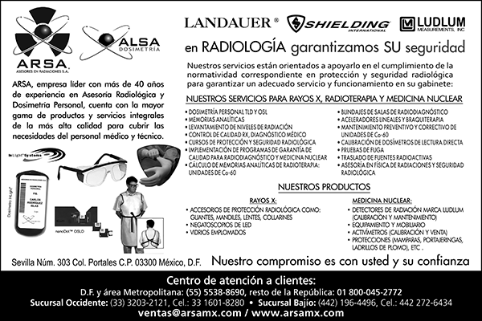

Asesores en Radiaciones, S.A. ARSA®
Sevilla Núm. 303
Col. Portales, C.P. 03300
Deleg. Benito Juárez, México, Ciudad de México
(55) 5538-8690
Lada sin costo: 01 800-045-2772
ventas@arsamx.com
www.arsamx.com

ASESORES EN RADIACIONES, S.A. (ARSA®) es una empresa con 40 años de experiencia en física de radiaciones: Asesoría radiológica y dosimetría personal, que cuenta con todas las autorizaciones requeridas para ofrecer sus servicios y productos.
Nuestra empresa hermana ALSA DOSIMETRÍA S. DE R.L. DE C.V. se creó a raíz de la fusión con las empresas de dosimetría más grandes tanto a nivel mundial como del cono sur, Landauer y Sapra, respectivamente, para ofrecer en México la dosimetría clínica más moderna, personal y confiable llamada OSL (luminiscencia por estimulación óptica) con dosímetros InLight.
ASESORÍA EN RADIACIONES
para dar cumplimiento ante
la COFEPRIS Y CNSNS
ARSA® es Asesor Especializado en Seguridad Radiológica
|
De tipo personal, con la tecnología propia más avanzada del mundo: OSL Optically Stimulated Luminiscence (estimulación óptica), certificada por la Comisión Nacional de Seguridad Nuclear y Salvaguardias. |
|
|
El servicio de Dosimetría OSL de ALSA cuenta con la tecnología más avanzada disponible para medir la exposición a la radiación. |
|
|
OTROS |
|
|
ACELERADORES LINEALES |
Calibración. |
|
ASESORÍA EN GENERAL |
Área médica, industrial e investigación. |
|
ASESORÍA Y GESTORÍAS |
Ante la Comisión Nacional de Seguridad Nuclear y Salvaguardias (CNSNS) y la Comisión Federal para la Protección contra Riesgos Sanitarios (COFEPRIS). |
|
CÁLCULO DE BLINDAJES |
También llamada memoria analítica para unidades de radiodiagnóstico, radioterapia y medicina nuclear. |
|
CALIBRACIÓN DE DETECTORES DE RADIACIÓN |
Geiger Müller, cámara de ionización, dosímetros de lectura directa, monitores de área y calibradores de dosis (activímetro). |
|
CONTROL DE CALIDAD |
También llamado verificación de parámetros de operación de equipos de rayos X para el diagnóstico médico. |
|
CURSOS |
Para médicos y técnicos en radiodiagnóstico, radioterapia o medicina nuclear y radiología. ARSA® cuenta con licencia para impartir cursos de seguridad radiológica para personal de gabinetes de rayos X para el diagnóstico médico. Cursos para encargado de seguridad radiológica tipo “C” y para POE que busca registro ante la CNSNS y COFEPRIS. |
|
DETERMINACIÓN |
En aguas residuales de medicina nuclear, alimentos, bebidas y minerales. |
|
DETERMINACIÓN |
Verificación de la hermeticidad de fuentes selladas de radiación ionizante. |
|
EQUIPOS DE TERAPIA SUPERFICIAL |
Calibración. |
|
LEVANTAMIENTO DE NIVELES DE RADIACIÓN |
Es la comprobación que el blindaje de una instalación radiológica es suficiente. |
|
MANUALES E INFORMES DE SEGURIDAD RADIOLÓGICA |
Asesoría en su elaboración y la vigilancia en su implementación. |
|
TRANSPORTE |
De material radiactivo. |
|
UNIDADES DE CO-60 |
Mantenimiento y calibración. |
|
PRODUCTOS |
|
|
Variedad de artículos plomados para aplicaciones de rayos x convencional, tomografía, mastografía y ortopantomografía. Lentes, goggles, collarines tiroideos, mandiles, guantes de sujeción y quirúrgicos, protectores gonadales. |
|
|
Sin plomo, estérilizables hasta por 5 veces. |
|
|
Elaborados en vinil, protección equivalente a 0.5 mm de plomo a 100 kVp. |
|
|
Protectores para la radiación. |
|
|
RAY-BAR ENGINEERING CORPORATION |
|
|
RAY - BAR VIDRIOS EMPLOMADOS |
Mamparas, vidrios plomados. |
|
ACCESORIOS PARA ÁREA INDUSTRIAL |
Protecciones, detectores de radiación, monitores de área, calibradores de dosis, mamparas, accesorios de protección personal. |
|
ACCESORIOS PARA MEDICINA NUCLEAR |
Protecciones, detectores de radiación, monitores de área, calibradores de dosis, mamparas, accesorios de protección personal. |
|
ACCESORIOS PARA RADIOTERAPIA E INVESTIGACIÓN |
Protecciones, detectores de radiación, monitores de área, calibradores de dosis, mamparas, accesorios de protección personal. |
|
RTI |
Equipos para control de calidad en equipos de Rayos X, Mastografía, Tomografía Panorámica Dental y Hemodinamia. |